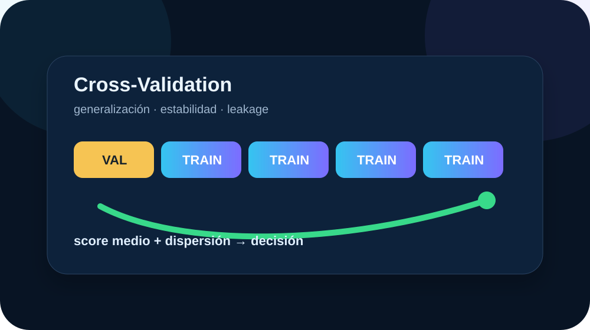

¿Qué es dato nuevo?
Train, validation, test, hold-out y error fuera de muestra.
Una experiencia docente integral para diseñar particiones honestas, detectar leakage, medir estabilidad, seleccionar modelos sin optimismo y traducir métricas técnicas a decisiones de negocio.

La Presentación 01 desarrolla el marco estadístico; la Presentación 02 recorre la teoría y los controles de los 14 laboratorios; la Presentación 03 identifica explícitamente la guía PowerPoint de las simulaciones y la abre en modo de reproducción automática, con descarga PPTX y vista online en Google.
Cada recurso cumple una función distinta dentro de la secuencia de aprendizaje.
La secuencia evita enseñar validación como una receta de API. Primero define qué significa generalizar y después selecciona la técnica.
Train, validation, test, hold-out y error fuera de muestra.
K-Fold, estratificación, grupos, tiempo y gap.
Leakage, preprocessing global, overfitting e inestabilidad.
Tuning, Repeated CV, Nested CV y predicciones OOF.
Métrica, dispersión, umbral y business readiness.
Los laboratorios forman una progresión desde la mecánica básica hasta una decisión empresarial completa.
El splitter se elige por la estructura del dato y por la forma en que el modelo encontrará observaciones nuevas.
| Situación | Esquema orientativo | Riesgo principal |
|---|---|---|
| Observaciones aproximadamente iid | K-Fold / Repeated K-Fold | Dependencia no detectada o preprocessing global |
| Clasificación desbalanceada | StratifiedKFold | Folds con pocos positivos y métricas engañosas |
| Múltiples filas por entidad | GroupKFold / StratifiedGroupKFold | Identidad compartida entre train y validación |
| Datos ordenados en el tiempo | TimeSeriesSplit / ventana móvil | Future leakage y drift |
| Tuning intenso con muestra limitada | Nested Cross-Validation | Optimismo por selección |